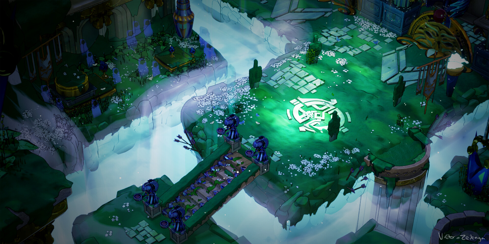

A Study of Hades by Supergiant Games: The Narrative Power of Music in Hades
On this site I will be exploring the use of music in Supergiant Games Hades and how it influences the emotional tone of the game, from tense combat sequnces to moving narrative points.
Video game music plays a crucial role in influencing the player's experience, frequently serving as a subtly guiding force that affects feelings and perceptions inside the game's universe.
You can see here the use of intense music from the trailer that sets the tone for the game.
"Hades" is well-known for its stunning visual design and captivating music.
The game's images and audio work in tandem to produce an immersive experience, making it an ideal case study for an examination of the interaction of sound and vision.

This image showcases the one of many vibrant environments in the game, each with their own soundtrack composed by Darren Korb.
The audio sample from one of "Hades'" intense boss fights is below; it perfectly captures the intense tension and huge stakes the player must overcome. As you listen, pay attention to how the strong rock music heightens the intensity and difficulty of the battle, symbolizing the fury and resolve needed to defeat these tough opponents.
The ferocity of the music you just heard in this "Hades" boss battle clip is a good illustration of how the soundtrack enhances the gameplay. The game's concept of perseverance and struggle within the Underworld is furthered by the strong rock components. This specific track not only amplifies the surge of adrenaline during battle, but it also corresponds with the game's main story of struggle and victory. It shows how the game may utilize music to create a tale and match the player's emotional state to the action and storyline as it unfolds in-game.
The concepts presented by Brian Massumi in "The Autonomy of Affect" enable us to comprehend the significance of "Hades'" boss fight music. According to Massumi, our emotions frequently arise before we even consider them, which explains why gamers react so quickly to this music by becoming nervous and eager.
The rock music in the boss battle, such as the clip we heard, does more than merely establish the tone; it has a real impact on how players feel. It makes the conflict appear more fierce and vital without requiring the player to think about it.
In addition, Massumi discusses how our emotions may be strong and automatic. This is similar to how the music in 'Hades' immediately lets players experience the thrill and challenge of the battle, even before they consider how difficult it may be.
The music in 'Hades' does more than merely play in the background, following Massumi's premise that feelings may lead the way. It's an important aspect of the game that immerses players in the action by combining what they hear with how they feel.